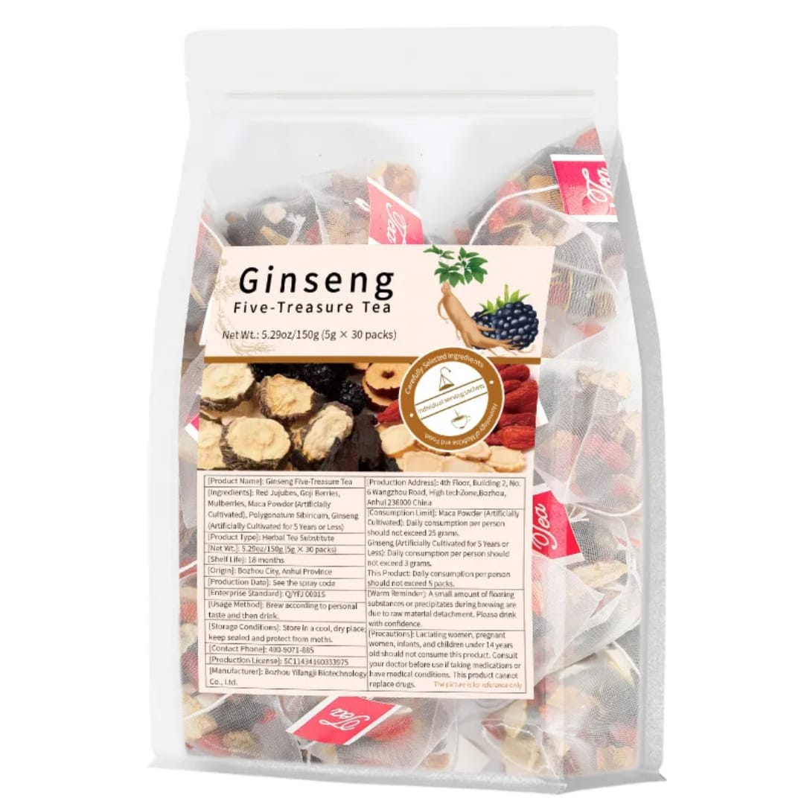

Ginseng Root
Traditionally valued for vitality and everyday wellness.
Five traditional herbs in one simple daily tea ritual — including ginseng, goji berries, red dates, mulberry leaf and Huang Jing.

THE FIVE TREASURES
Five whole herbs. Nothing unnecessary.
Traditionally valued for vitality and everyday wellness.
A traditional fruit ingredient with naturally occurring plant compounds.
A naturally sweet ingredient long used in traditional herbal drinks.
A traditional botanical ingredient used in herbal tea preparations.
A traditional herb also known as Polygonatum or Yellow Essence.
YOUR DAILY RITUAL
Three simple steps to prepare your Ginseng Five-Treasure Tea.
Place one 10g tea bag into your cup.
Pour hot water at about 90°C or above into the cup.
Let the herbs infuse, then enjoy your tea.
WELLNESS BENEFITS
A traditional herbal tea designed to complement everyday wellness.
A simple herbal ritual that fits naturally into a consistent wellness routine.
Ginseng has a long history of traditional use in support of vitality.
Ginseng has traditionally been used in preparations associated with alertness and focus.
The plant ingredients naturally contain a variety of botanical compounds.
Ginseng is commonly described in traditional herbal practice as an adaptogenic herb.
An easy way to enjoy five traditional ingredients in one warm cup.
A wellness product, not a medicine. Traditional-use descriptions are not medical claims and this product is not intended to diagnose, treat, cure or prevent disease.
PRODUCT AT A GLANCE
ORDER OPTIONS
The more you order, the lower your effective cost per pack.
✓ No card payment required · ✓ Free nationwide delivery
REAL CUSTOMER EXPERIENCES
Customer messages shared with the business and presented without invented names or ratings.
“That's great. We are happy to always delivery”
“Thank you for your patronage ma”
“Thank you for trusting us ✅”
“We try our best to render quality delivery service. Thank you for patronizing us 🥂”
QUESTIONS
You pay when your order is delivered. No card payment is required on this website.
Select a pack, complete your delivery details, and submit the order. Your order can then be confirmed by our team.
We offer free delivery nationwide.
Place one sachet in a cup, add hot water, allow it to steep for 3–5 minutes, then enjoy.